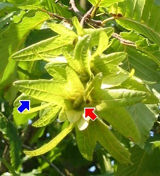

Die Früchte werden ab September reif.
 Die Früchte sind kleine harte Nüsschen. Jedes Nüsschen hat einen dreilappigen Flügel.
 Beim Herabfallen dreht sich das geflügelte Nüsschen in der Luft.
Beim Herabfallen dreht sich das geflügelte Nüsschen in der Luft.
Dadurch fällt es langsamer und kann leicht vom Wind davongetragen werden.